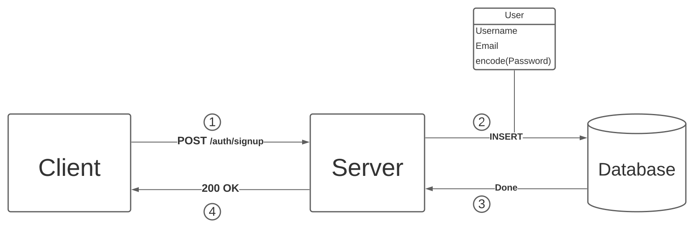
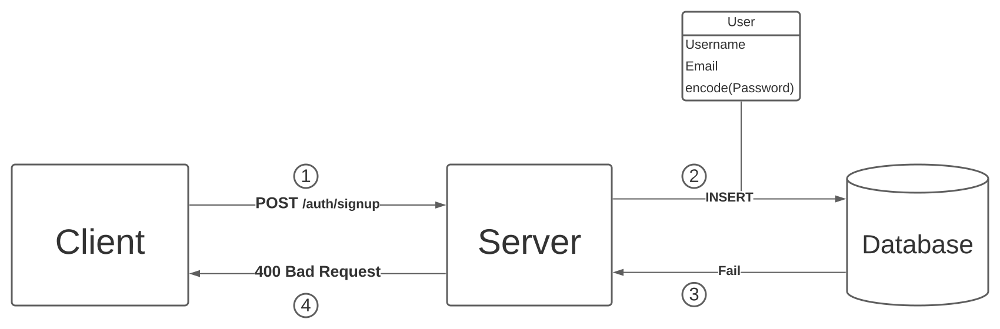
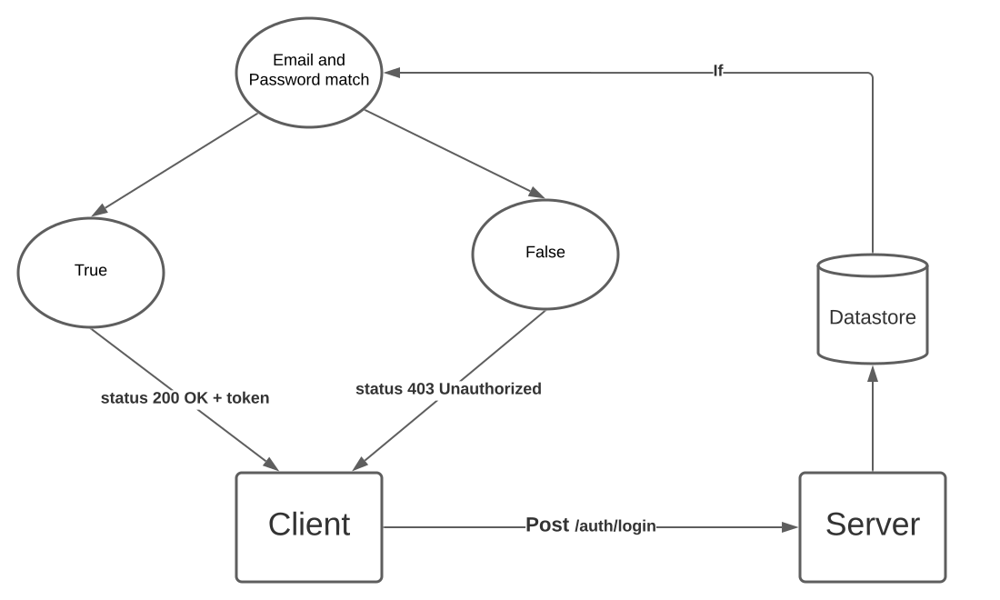
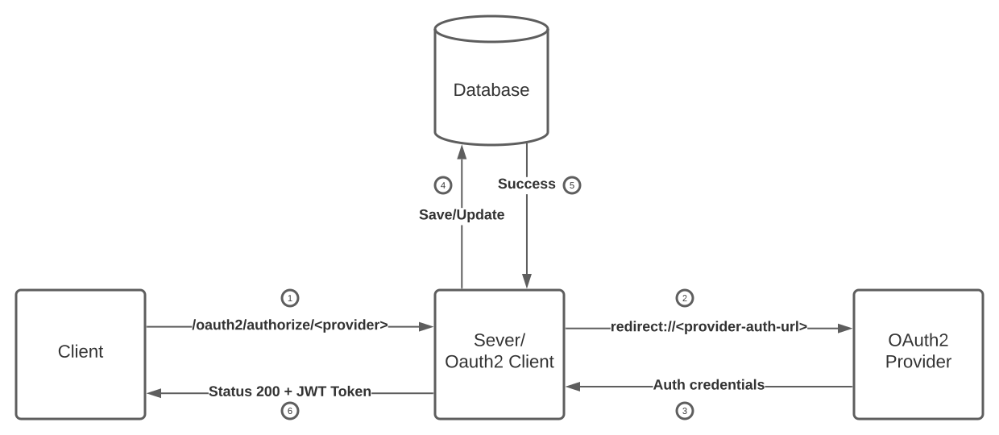
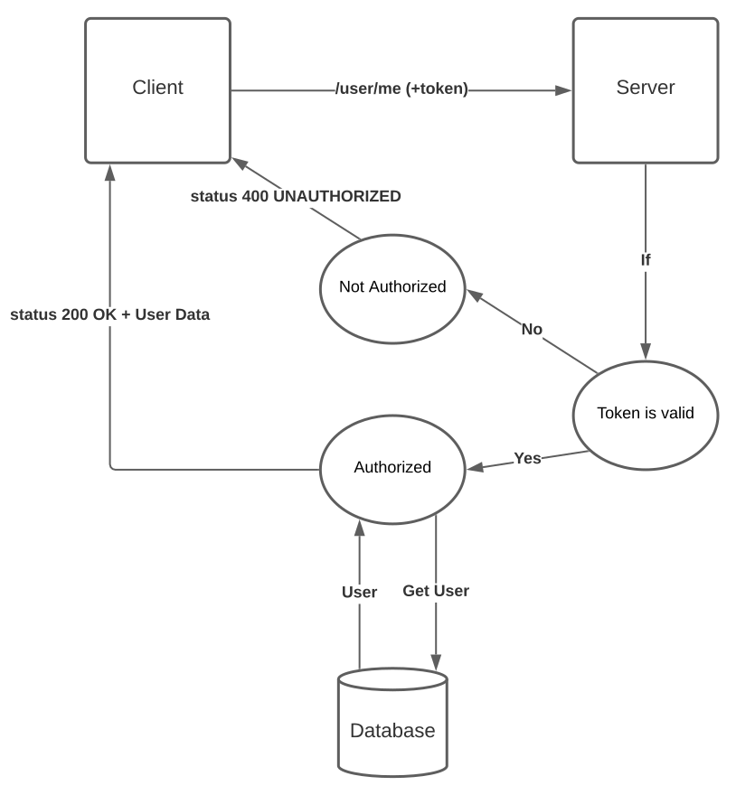

This is the Design Document for Authentication Client created using Spring Boot Backend and React Frontend.
It elaborates the technologies and processes used to successfully enable a secure Authentication for a user. So that only the authenticated user can access protected resource.
The application features a protected resource, which is equivalent to any the dashboard of other pages in a web application, which only authenticated user can view.
Two types of authentications are implemented:
This type of authentication is two step process. First the user has to authorize the credentials in the application's datastore. After that, the user can login with the provided email and password.
This is a single step authentication process. For this application, the user can authentication with Github and Google, but further third party authentication providers can be added. The user just has to login with their account without any signup and the rest is handled by the Oauth2 authentication provider.
The new user Signup's with three credentials, namely:
These credentails are submitted at the Server endpoint, /auth/signup, where these are registered in the application's users datastore. The stored credentials are userd for authenticating the user credentials when logging in.
The password is encoded by Password Encoder before being stored into the Datastore to improve the security. This application uses Bycrypt Encoder as the password encoder, which is build into the Spring Security framework. You can swap it with any other encoder of you choice.
Depending on the provided signup credentials, the request can either Pass or Fail:
Pass: The provided Email is not already registed, in which case a new user record is created in the Datastore and the signup request is successful returning a 200 OK status code.
Fail: The provided Email is already registered. This condition applies if any Oauth2 signed in accout (Github or Google) provided the same email. It results in unsuccessful Signup request returning 400 Bad Request status code.
That's it for Signup. No complicated hash is returned and stored as cookies in signup.
Login validates the user credentails and returns a token, which is stored by the client and is used later to authenticate for access the protected resource. Login may pass or fail depending on the user credentials. In case of failure, server returns status code 403 Unauthorized, whereas status code 200 OK is returned along with the token if the login is successful.
User POST their Email and Password to the Server endpoint, /auth/login. The server compares the provided email and password to the email and encrypted passord registered in the datastore.
The credentials may be invalid or not even registered, the login request is failed in either case.
If the credentials are valid, the server will generate an authentication token, JSON Web Token in this case. The token is saved by the client and sent further requests to access the protected resource(s).
In this type of Authentication, the validation is handled by OAuth2 provider, Google and Github API in this case. The provider authenticates the user and provides the authenticated user's credentials. These are used by the server to create and return the token.
The client sends the request to access protected resource, this can be page in a web application that requires authentication to access. In this example, it is the home page on client, which makes GET Request to /user/me on server to get account information. This is equivalent to viewing your profile on Facebook, for example.
The server checks for the provided access token (JWT in this case). If the token does not exist, or it is invalid, the server returns 400 UNAUTHORIZED status code. After receiving this response, the client is redirected to authenticate with valid credentials this time. Contrary to that, if the token contains valid credentials, the server fetches stored client data from the database and returns it as a JSON object. The Client uses this data to show the profile information to the user.
You can find the implementation here.